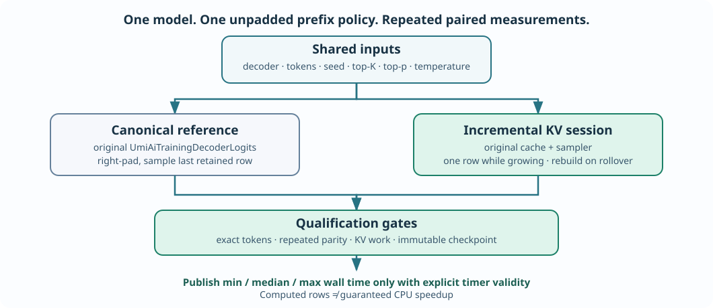

Learning objectives
By the end of this lesson you should be able to distinguish numerical parity from work reduction and observed execution time, explain why the benchmark must use the same positional-embedding policy on both paths, and run a native C23 experiment without modifying a saved model.
1. Why last week's row counts were not enough
Lesson 73 introduced opt-in generation from an unpadded prefix. The first real token occupies learned absolute position zero. As the prompt grows within the configured context length, the KV cache computes one additional token row and retains the earlier projections. A full-context canonical evaluation computes every context row again, even though only the last real token's logits are used for sampling.
The two approaches can perform different amounts of work. That does not, by itself, establish how many seconds either implementation requires. A full-context implementation may use efficient batched kernels; a row-by-row cache may pay more overhead. Memory allocation, snapshotting model weights, matrix access patterns, softmax and function-call costs also contribute to elapsed time.
Batch 75–76 therefore introduces UmiAiTrainingPrefixBenchmarkRun, a Framework-owned service that compares the same unpadded generation problem through the original decoder and the already-qualified cached session. The reference path calls UmiAiTrainingDecoderLogits. The cached path calls UmiAiTrainingDecoderGeneratePrefixNucleus. The benchmark implements no new attention mathematics or random-number algorithm.

2. Equal semantics are a precondition, not an optional refinement
The existing legacy generator always inserts BOS tokens to the left until the context is full. The new prefix generator does not use that policy: its prompt starts at position zero. Because the decoder learns a different embedding for each absolute position, left padding changes its numerical input. For that reason, comparing outputs between legacy and prefix modes would not constitute a parity test.
Instead, the independent reference uses a full contextLength-token buffer with BOS tokens to the right of the retained prefix, and samples logits at position retained - 1. The original causal mask prevents future padding from influencing that row. When the context fills, the oldest retained token is dropped and the canonical decoder recomputes all positions, matching the mathematically necessary cache rebuild.
The reference and cache receive identical prompt tokens, temperature, top-K, top-p, requested generation count and non-cryptographic seed. Every sampled token must agree at every step, including immediately after a context eviction. They also must reproduce the same sequence in later trials.
3. A complete example using the existing Framework API
#include "umicom/ai/training/prefix_benchmark.h"
#include "umicom/ai/training/byte_tokenizer.h"
#include <inttypes.h>
#include <stdio.h>
int main(void)
{
const UmiAiTrainingDecoderConfig config = {
UMI_AI_BYTE_VOCABULARY, 8U, 8U, 16U, 2U, UINT64_C(20261024)
};
const UmiAiTrainingNucleusOptions policy = {0.85F, 12U, 0.9F};
const UmiAiTrainingPrefixBenchmarkPlan plan = {
12U, 1U, 5U, UINT64_C(7801)
};
const size_t prompt[] = {109U, 114U, 120U}; /* 'int' */
UmiAiTrainingPrefixBenchmarkResult report = {0};
UmiAiTrainingDecoder *decoder = NULL;
UmiStatus status = UmiAiTrainingDecoderCreate(&config, &decoder);
if (status == UMI_STATUS_OK)
status = UmiAiTrainingPrefixBenchmarkRun(decoder, prompt, 3U,
&policy, &plan, &report);
UmiAiTrainingDecoderDestroy(decoder);
if (status != UMI_STATUS_OK) return 1;
printf("Verified pairs: %zu\n", report.verifiedPairs);
printf("Canonical rows: %" PRIu64 "\n",
report.estimate.canonicalComputedRows);
printf("Cached rows: %" PRIu64 "\n",
report.observedCache.computedRows);
if (report.wallClockAvailable)
printf("Canonical median wall time: %.6f s\n",
report.canonical.medianWallSeconds);
return 0;
}The program deliberately creates an educational decoder rather than loading a production checkpoint. The CMake demonstration executable in learning/native-llm/prefix-work/benchmark_prefix_generation.c contains the same setup and prints both timing distributions. This benchmark does not train the model and does not save or load any files.
4. Work through the arithmetic
| Quantity | How it is calculated | Result |
|---|---|---|
| Context length | Configured decoder capacity | 8 tokens |
| Initial prompt | Nonempty unpadded prefix | 3 tokens |
| Generated tokens | One pending token is not appended until next pull | 12 tokens |
| Reference rows | 8 context rows × 12 sampling steps | 96 |
| Growing-cache rows | 3 initial + 5 one-token appends | 8 |
| Post-eviction rows | 6 complete rebuilds × 8 rows | 48 |
| Cached total | 8 + 48 | 56 |
| Saved computation | 96 − 56 | 40 rows (41.67%) |
This result is workload evidence, not a claim of a 41.67% faster program. There is no necessary linear relationship between computed token-row counts and wall-clock time, especially for a small educational decoder.
5. Why the benchmark alternates execution order
Running every reference trial first and every cached trial second would introduce a systematic bias: instruction caches might already be warm, the CPU might have changed clock frequency, and the operating system could have scheduled unrelated work. The benchmark executes complete reference/cache pairs and reverses which path runs first on the next pair. A bounded warm-up is executed before measured runs, but its times are discarded. Warm-up output still has to pass the same parity and workload checks.
The result stores the minimum, median and maximum observed wall-clock time for each path. A median reduces the influence of a small number of unusually slow samples, but a three- or five-run median is not a statistical guarantee. Use larger representative work outside this small educational laboratory before making deployment decisions.
6. Practical exercises
- Repeat the workload calculation with a context of 16, a prompt of 5 and 9 generated samples. Explain which appended tokens require complete rebuilds.
- Compare a one-token prompt with a full eight-token prompt. Why can the latter have no row saving before the first eviction?
- Explain why the legacy BOS-left-padded generator is not a valid reference for unpadded prefix generation.
- Describe how a lower computed-row count could coexist with a higher observed wall-clock time.
- Find the exact source files containing the benchmark plan, canonical reference and original KV owner. Which files own actual numerical operations?
Engineering conclusion: Establish semantic equivalence and numerical parity first. Measure workload second. Only then interpret repeated timing observations.